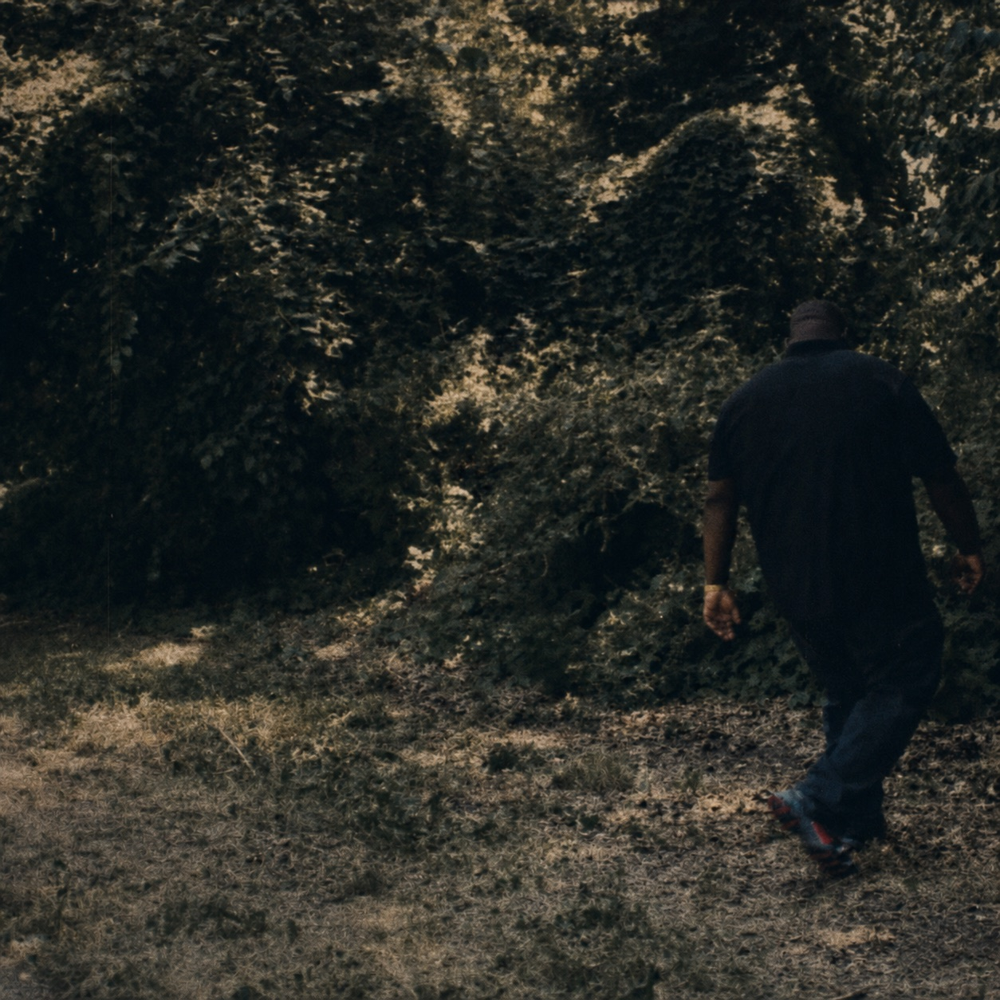

The current signal.
The latest music: raw observation translated into rhythm, language, and pressure.
ListenIndependent artist / Bronx, New York
A widening thicket rooted in darkness...
Experimental hip hop that challenges narratives, twists perception, critiques society, and relishes solitude.

Charles M. Daniel creates experimental, raw music shaped by solitude, critique, and reverse perceptual engineering. The work turns personal thoughts and collective feelings into songs, stories, and worlds listeners can live inside.
Listen first. Understand later.
Releases, fragments, and future worlds. Each artifact is a door, not an explanation.
The latest music: raw observation translated into rhythm, language, and pressure.
ListenA developing body of work about faith, pain, sovereignty, and what silence preserves.
Join for first listenLyrics, notes, and essays that reveal the machinery beneath the music.
Read essayA widening thicket
This is a creative universe built from contradiction: private thought against public pressure, faith against systems, silence against noise. Songs are entry points. Writing maps the terrain.
For the genuine critical thinker.
Notes from inside the work
Essays, fragments, release notes, and systems for independent creation. Writing is where the music's questions remain open.
Read the NotesThe art and its operating system live in one place. Clear routes for people who can move the work forward.
Releases, writings, and new worlds—sent without the feed between us.